- Index
 ImageMagick Examples Preface and Index
ImageMagick Examples Preface and Index
- Known and Fixed Bugs Index
The following is a demonstration before and after results and IM Examples
development examples of a new or exapnded aspect of ImageMagick.
During the creation of the IM Examples for
Quantization and Dithering I saw an oppertunity to expand the ordered
dither functionality to not only provide more ordered dither patterns, but
also expand it to provide an ordered dithered posterization functionality.
That is allow not only bitmap dithering, but dithering between multiple color
levels as per the "
-posterize" operator. See
Posterize, recolor using primary colors for examples.
Original Ordered Dither Threshold Maps
This is section is a reference and will not be updated.
This is what the IM "
-ordered-dither" operator provided before the expandion of this
operators functionality.
convert logo: -resize 40% -crop 100x100+105+50\! logo.png
convert logo.png -ordered-dither 2x2 logo_2x2.gif
convert logo.png -ordered-dither 3x3 logo_3x3.gif
convert logo.png -ordered-dither 4x4 logo_4x4.gif
|
![[IM Output]](logo.png)
 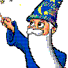
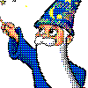
![[IM Output]](logo_3x3.gif) 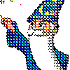
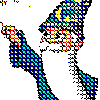
Note that ordered dither was able to, by defaul so a level 2 posterization of
images. This will be the last time I look at this.
Notice that it only provided these three ordered dither patterns, and these
patterns had to be specified as numbers, representing the patterns tile size.
Lets look at these patterns using gradients.
convert gradient:'[640x1]' -scale 640x30\! -negate gradient.png
convert gradient.png -ordered-dither 2x2 orig_2x2.gif
convert gradient.png -ordered-dither 3x3 orig_3x3.gif
convert gradient.png -ordered-dither 4x4 orig_4x4.gif
convert gradient.png -ordered-dither 8x8 orig_8x8.gif
|
![[IM Output]](orig_2x2.gif)
![[IM Output]](orig_4x4.gif)
![[IM Output]](orig_8x8.gif)
The extra '
8x8' ordered dither pattern was an existing ordered
dither function that was only linked into the "
-ordered-dither"
operator with IM v6.2.9-2, under my suggestion.
In version IM v6.2.8-6 some digital-halftone dither patterns was added
by Glenn Randers-Pehrson.
convert gradient.png -ordered-dither 2x1 orig_2x1.gif
convert gradient.png -ordered-dither 4x1 orig_4x1.gif
convert gradient.png -ordered-dither 6x1 orig_6x1.gif
convert gradient.png -ordered-dither 8x1 orig_8x1.gif
|
![[IM Output]](orig_2x1.gif)
![[IM Output]](orig_6x1.gif) 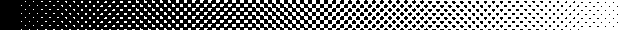
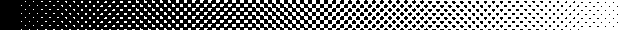
Note the 'hack'-like nature using a '
x1' number to allow the
addition of these dithering patterns.
Also note that at this time "
-ordered-dither" and
"
-random-dither" operators were aliases for each other, which is
why this restriction existed. But it also created a horrible 'fall-back'
situation, in that if the arguments for "
-ordered-dither" was
wrong, IM would do a "
-random-dither" using a very bad set of argument, rather than give
the user an error.
Ordered Dither Threshold Maps Expansion (and naming)
From IM v6.2.9-7, the above changed, to allow the use of more symbolic
selection of the ordered dither threshold maps, with IM returning an error if
no map was selected rather than falling back to the disasterious "
-random-dither"
operator.
First of all, all the threshold maps used for the ordered dither patterns were
checked and updated to produce a better result for the specified style.
For example compare these new "
-ordered-dither"
threshold map results...
convert logo.png -ordered-dither o3x3 logo_o3x3.gif
convert logo.png -ordered-dither o4x4 logo_o4x4.gif
|
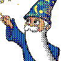
![[IM Output]](logo_o4x4.gif)
...to what the previous threshold maps produced...
As you can see the re-developed and checked threshold maps produce a distictly
better diffused pixel dither pattern.
And here is the new expanded set of built-in ordered dither threshold map
arguments, and the new names for selecting the threshold map to use.
# Threshold Non-Dither / Minimal Checkerboard Dither
convert gradient.png -ordered-dither threshold od_threshold.gif
convert gradient.png -ordered-dither checks od_checks.gif
# Diffused Pixel Dither
convert gradient.png -ordered-dither o2x2 od_o2x2.gif
convert gradient.png -ordered-dither o3x3 od_o3x3.gif
convert gradient.png -ordered-dither o4x4 od_o4x4.gif
convert gradient.png -ordered-dither o8x8 od_o8x8.gif
# Halftone Screen (45 degree angle)
convert gradient.png -ordered-dither h4x4a od_h4x4a.gif
convert gradient.png -ordered-dither h6x6a od_h6x6a.gif
convert gradient.png -ordered-dither h8x8a od_h8x8a.gif
# Halftone Screen (orthogonal)
convert gradient.png -ordered-dither h4x4o od_h4x4o.gif
convert gradient.png -ordered-dither h6x6o od_h6x6o.gif
convert gradient.png -ordered-dither h8x8o od_h8x8o.gif
convert gradient.png -ordered-dither h16x16o od_h16x16o.gif
|
![[IM Output]](od_o2x2.gif)
![[IM Output]](od_o3x3.gif)
![[IM Output]](od_o4x4.gif) 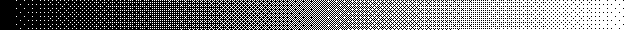
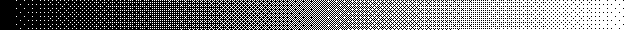
![[IM Output]](od_h4x4a.gif) 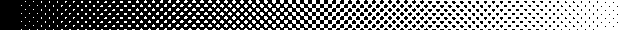
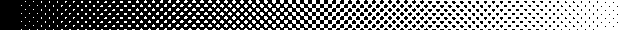
![[IM Output]](od_h4x4o.gif)
![[IM Output]](od_h6x6o.gif) 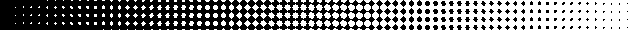
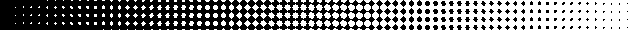
![[IM Output]](od_h16x16o.gif)
That is a total of 13 different types of threshold maps. Internally the code
was designed to allow simple addition of more such maps in the future, and the
development of the use of XML data file to read in such maps in a later stage.
Note the "
checks" used to be called "
2x1", as a
halftone 2x2 pattern, however it is more than that. It represents the most
minimal dither pattern posible, for all ordered dither patterns, one that only
adds a single dither pattern between any two colors.
The "
threshold" pattern is supplied as an equivelent to using a
undithered "
-posterize" operator, as well as a test map on the posterization
aspects of the new "
-ordered-dither" function. (See next section)
As part of backward compatibility, all the old
'
{number}x{number}' arguments have been made
aliases to the appropriate 'named' threshold map above. They are now
depreciated, but will always remain.
Posterized Ordered Dither Expansion
The above consolidation of "
-ordered-dither" code
and the addition of the extra threshold mappings was not the primary purpose
of the re-development of the operator.
With some initial 'proof of concept' work using the "
-fx" operator (see below), I
wanted to provide a ordered dithering between multiple levels of colors (as
per the "
-posterize").
WHY? Because then you can generate a more deterministic dithering of images
than you can achieve with 'error correction dithering'. This is especially
important for color reductions involving animations as you will not get
problems from color differences between frames.
The posterization level is added to "
-ordered-dither"
argument using commas, making this addition backward compatible with previous
usage of the operator.
For example 'checks,6' will use a classic "web-safe" color map (see the
"netscape:" built-in), but add one extra pseudo-level of color dithering the
'checks' dither map between each level. In other words even though only 6
levels of color per channel is being used (producing 6^3 or 216 colors) the
single dither pattern between levels increases the dither to and effective 11
levels (producing and effective 11^3 or 1331 colors).
In this I plan to implement the extra levels with the following proprieties.
- What channels are operated on is controlled by the "-channels" setting.
- A single number is for all channels. EG: '6' for the "web-safe colormap".
- Multiple numbers allows you to use different level counts for each
channel. EG: '8,8,4' will implement a '332' ordered dithered colormap.
- If no numbers are given, fall back to a 2 level bitmap dither.
- A value of zero disables posterization of that color channel.
For example here is the same gray scale gradient first dithered using a 6 grey
levels.
# dithering between 6 grey levels
convert gradient.png -ordered-dither threshold,6 od_threshold_6.gif
convert gradient.png -ordered-dither checks,6 od_checks_6.gif
convert gradient.png -ordered-dither o2x2,6 od_o2x2_6.gif
convert gradient.png -ordered-dither o4x4,6 od_o4x4_6.gif
convert gradient.png -ordered-dither o8x8,6 od_o8x8_6.gif
|
![[IM Output]](od_checks_6.gif)
![[IM Output]](od_o2x2_6.gif) 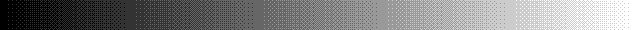
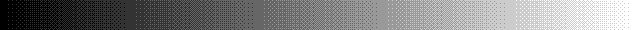
![[IM Output]](od_o8x8_6.gif)
Compare that to the original gradient...
As you can see even though only 6 colors are used, with ordered dithering you
increase the effective number of colors used to define the gradient, to a
point where you can be hard pressed to notice just how few colors were used!
Not only can you define the number of posterization levels for all channels,
but you can specify the levels for each channel (as specified in "
-channels". For example here
we dithered the gradient using a special 332 color map (8 levels or red and
green, 4 of blue) which defines a total of 256 colors.
convert gradient.png -ordered-dither o8x8,8,8,4 od_o8x8_884.gif
|
![[IM Output]](od_o8x8_884.gif)
Because of the different number of color levels per channel, the above image
is not made up of pure grey colors, but includes some bluish and yellowish
pixels which cancels each other out to produce extra levels of greys.
Now compare a 'error correction dithered' posterization, with an 'ordered
dithered' posterization of the IM logo at level 2, and level 6.
convert logo.png -posterize 2 logo_posterize_2.gif
convert logo.png -ordered-dither o8x8 logo_o8x8_2.gif
convert logo.png -posterize 6 logo_posterize_6.gif
convert logo.png -ordered-dither o8x8,6 logo_o8x8_6.gif
|
![[IM Output]](logo_posterize_2.gif)
![[IM Output]](logo_o8x8_2.gif)
![[IM Output]](logo_o8x8_6.gif)
Each set of images use the same set of colors, the first pair using the simple
threshold set of 8 colors, with the second using the 6 level 'web-safe' color
map. The first image in each pair is pseudo-randomly 'error correction'
dithered, the second is ordered dithered.
That means if a small change occurs the first will have almost the whole
pattern of dithered colors within the image will change, while the second will
only be modified wherever it was actually changed. In other words an ordered
dithered posterization is much better for animations, that rely on finding the
areas of change in images to reduce the overall animation size.
The 'error correction dithered' version however is generally regarded as
better as it is more 'correct' color wise, and there is less patterns to
attract the eye.
Also at this time you can not use ordered dithering between a random set of
colors as you can with an 'error correction dither', but only between
mathematically determined 'posterized' colors.
Here is the logo ordered dithered against a '332' colormap
convert logo.png -ordered-dither o8x8,8,8,4 logo_o8x8_332.gif
| |
![[IM Output]](logo_o8x8_332.gif)
|
The '332' colormap (8 levels of red and green, 4 levels of blue) is regarded
as probably the best posterize colormap for a 256 color limit image. The off
difference in channel levels producing a slightly better shading of colors for
this cartoon like image.
Unfortunately this is not currently reproducible using the error correction
dithered "
-posterize" operator.
It was to produce this color map that the expansion of the "
-ordered-dither"
operator, included the ability to specify separate levels for each color
channel.
XML data source for threshold maps
This was a final addition to the Ordered Dither Upgrade, and combined with a
revisement of all the XML data handling within IM by Cristy.
With this development you can now use a "
-list threshold" command to see
exactly what maps are available to the "
-ordered-dither"
operator. as well as use personal "
threshold.xml" data files to
define your own maps.
DIY New Othered-Dither Replacement
This is provided as a reference to the source and prototyping of the new
posterized form of ordered dither functionality that was shown above.
As part of using ImageMagick for my own images, I wanted to be able to design
and use my own ordered dither patterns. As such I figured out a equivalent
ordered dither method using the extremely slow "
-fx" operator.
For example (repeat of
DIY
Horizontal Dither)...
Here I created another set of dither pattern images, specifically to produce a
interesting shadow shading effect.
montage dpat_hlines.gif -filter box -geometry 30x20+5+0 \
-tile x1 -background none -frame 3 dpat_hlines_images.gif
convert gradient:'[600x1]' -scale 600x24\! -negate \
dpat_hlines.gif -virtual-pixel tile -fx 'u[floor(13*u)+1]' \
dpat_hlines_gradient.gif
|
![[IM Output]](dpat_hlines_gradient.gif)
And here I apply it to generate a shadow pattern.
convert -size 120x55 xc:white -draw 'fill #777 ellipse 50,43 30,5 0,360' \
-motion-blur 0x15+180 -blur 0x2 sphere_shadow.png
convert sphere_shadow.png \
dpat_hlines.gif -virtual-pixel tile -fx 'u[floor(13*u)+1]' \
sphere_shadow_dither.gif
convert sphere_shadow_dither.gif -fill red -stroke firebrick \
-draw 'circle 35,25 35,5' sphere_shadow_hlines.gif
|
![[IM Output]](sphere_shadow_dither.gif) 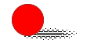
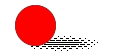
Now I converted Multi-Image Dither patterns, into and ordered dither threshold
map. Though this only works properly for complete sets of ordered dithered
images.
montage dpat_o2x2.gif -filter box -geometry 30x30+5+0 \
-tile x1 -background none -frame 3 dpat_o2x2_images.gif
convert dpat_o2x2.gif -delete 0 +append \
\( gradient:'[6x1]' -chop 1x0 -flop -chop 1x0 -scale 200% \) \
+matte +swap -compose CopyOpacity -composite \
-background none -crop 2x2 +repage -compose DstOver -flatten \
+matte dmap_o2x2.png
montage dmap_o2x2.png -filter box -geometry 30x30 -frame 3 dmap_o2x2_mag.png
|
![[IM Output]](dpat_o2x2_images.gif)
Which can be applied using "
-fx".
Now we can dither our images using, just a single image, and a much simpler
threshold comparison for each pixel rather than multiple images.
convert gradient:'[600x1]' -scale 600x24\! -negate \
dmap_o2x2.png -virtual-pixel tile -fx 'u>=v' \
dmap_o2x2_gradient.gif
|
And an example of applying this map.
convert logo.png \
dmap_o2x2.png -virtual-pixel tile -fx 'u>=v' \
diy_map_o2x2.gif
| |
|
These were then expanded into posterized forms.
montage dpat_o2x2x6.gif -filter box -geometry 20x20+3+3 \
-tile x1 -background none -frame 2 dpat_o2x2x6_images.gif
convert gradient:'[600x1]' -scale 600x20\! -negate \
dpat_o2x2x6.gif -virtual-pixel tile -fx 'u[floor(21*u)+1]' \
dpat_o2x2x6_gradient.gif
|
And here I apply it to each color channel of IM logo test image.
convert logo.png \
dpat_o2x2x6.gif -virtual-pixel tile -fx 'u[floor(21*u)+1]' \
diy_ordered_2x2x6.gif
| |
![[IM Output]](diy_ordered_2x2x6.gif)
|
And finally I created a posterized form of ordered dither using a single
binary threshold map.
map=dmap_o2x2.png; levels=6; \
g=`expr $levels - 1`; \
p=`convert $map -unique-colors -format %w info:`; \
t=`expr $p + 1`; d=`expr $g \* $p + 1`; \
convert gradient:'[600x1]' -scale 600x20\! -negate \
-virtual-pixel tile $map \
-fx "((((u*$d-floor(u*$d/$p)*$p)/$t)>=v)+floor(u*$d/$p))/$g" \
diy_o2x2_l6_gradient.gif
|
It is the mathematics developed for this final, posterization ordered dither
from a single threshold map, that was encoded to produce the new
OrderedPosterizeImage(), function defined above.
![[IM Output]](dpat_o2x2.gif)
{kind=link}
{kind=link}
{kind=link}
{kind=link}
{kind=link}
{kind=link}
{kind=link}
{kind=link}
{kind=link}
{kind=link}
{kind=link}
{kind=link}
{kind=link}
{kind=link}
{kind=link}
{kind=link}
{kind=link}
{kind=link}
{kind=link}
{kind=link}
{kind=link}
{kind=link}
{kind=link}
{kind=link}
{kind=link}